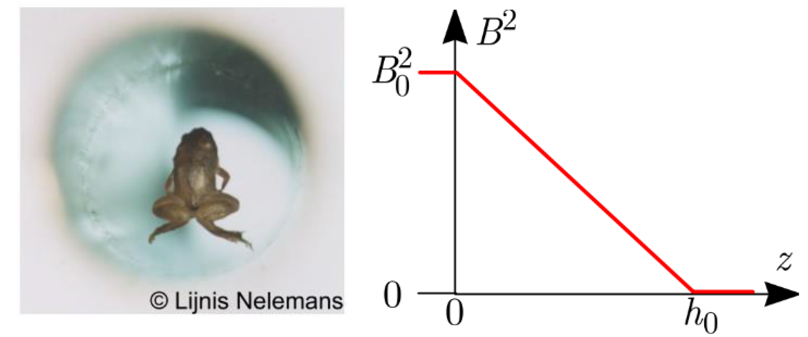
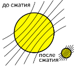
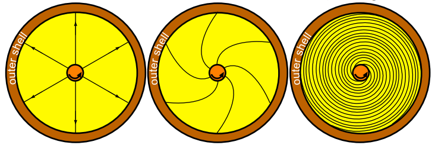

Y18 (2018) — English translation
Magnetic fields can be found everywhere. For example, the Earth's magnetic field is $25-60~\text{мкТл}$, strong permanent magnets give a field of about $1~\text{Тл}$, magnetic fields created in laboratories can reach an induction of $45~\text{Тл}$, magnetic fields of neutron stars and magnetars - up to $10^{11}~\text{Тл}$. In this problem we will look at several effects associated with strong magnetic fields. The magnetic field energy density is $w=\frac{B^2}{2\mu\mu_0}$, where $\mu_0=1{,}3\cdot{10^{-6}}~\text{Н}/\text{А}^2$ is the magnetic constant, $\mu$ is the relative magnetic permeability of the medium. Systems always try to occupy a lower energy state, which means that ferromagnetic substances ($\mu\gg{1}$) are pulled into regions of strong magnetic fields, while diamagnetic substances ($\mu<1$) are pushed out. The magnetic susceptibility $\chi=\mu-1$ of diamagnetic materials is a small value, $|\chi|\ll{1}$, so for the buoyancy force to be significant, the magnetic field must be strong. Water is diamagnetic ($\chi=-9\cdot{10^{-6}}$), and animals are composed primarily of water. Therefore, a frog can levitate in a sufficiently strong magnetic field.
Let the height of the frog $H$ not exceed $h_0=10~\text{мм}$, and assume that the square of the field induction depends on the coordinate as shown in Fig. 1.
Rice. 1. Levitating frog and the dependence of the square of the magnetic field $B^2$ on the height $z$

Stars are made of plasma, which is a very good conductor of electricity. Therefore, the magnetic field lines seem to be “frozen” into the moving plasma (Fig. 2). When a star contracts and turns into a neutron star, there is an instantaneous increase in the magnetic field induction of the star. Rice. 2. Magnetic field lines during plasma compression
Stars are made of plasma, which is a very good conductor of electricity. Therefore, the magnetic field lines seem to be “frozen” into the moving plasma (Fig. 2). When a star contracts and turns into a neutron star, there is an instantaneous increase in the magnetic field induction of the star.

Because The angular velocities of rotation of the inner and outer parts of the star are different, the field lines will look as shown in the figure.
Rice. 3. Field lines inside a neutron star

Carry out calculations under the following simplifying assumptions: solve the problem in a two-dimensional case, i.e. consider the star cylindrical; consider that the field was cylindrically symmetric at the initial moment of time; The field lines start on the inner cylinder and end on the outer one.
Carry out calculations under the following simplifying assumptions:
Source: https://pho.rs/p/500